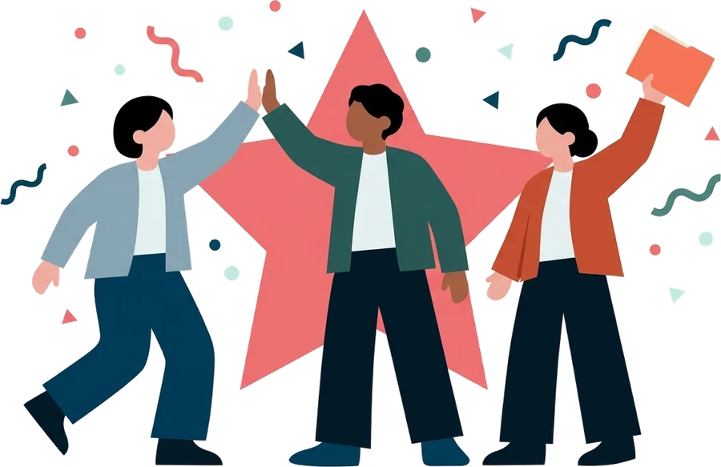

Fin del curso
Nivel alcanzadoObservador
Puntos de esta lección0
- Unidad 1Naturaleza, fundamentos, finalidad y clasificación de las audiencias preliminares nominadas
- Unidad 2Audiencias relacionadas con la libertad personal y la vinculación al proceso
- Unidad 3Audiencias para la autorización y control de técnicas de investigación
- Unidad 4Intervención argumentada en audiencias preliminares y ejercicio integrador